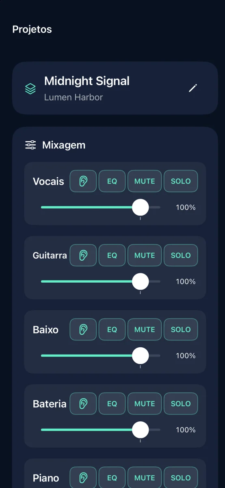
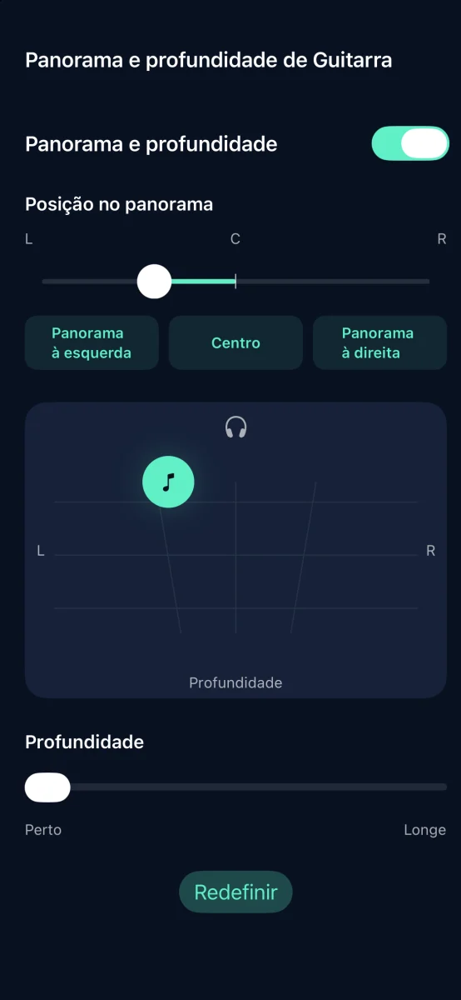
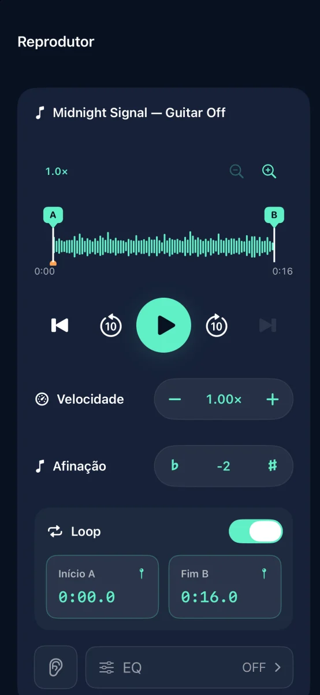

Separação de faixas e prática musical no iPhone

Transforme suas músicas em acompanhamentos
Separe a música em seis faixas e silencie a que você vai tocar.
Em breve na App Store

Recursos



Separação de faixas e prática musical no iPhone
A separação de áudio é feita no seu dispositivo. Não é necessário ter uma conta.
Ajuste o volume, mudo, solo, equalização, panorama e profundidade de cada faixa. Exporte em M4A, MP3 ou WAV.
Teste três separações concluídas gratuitamente. Uma compra única libera separações ilimitadas. Sem assinatura.
Não é possível importar faixas de streaming nem áudio protegido por DRM. Use áudio que você tem direito de usar.
Ajuda e suporte ↗